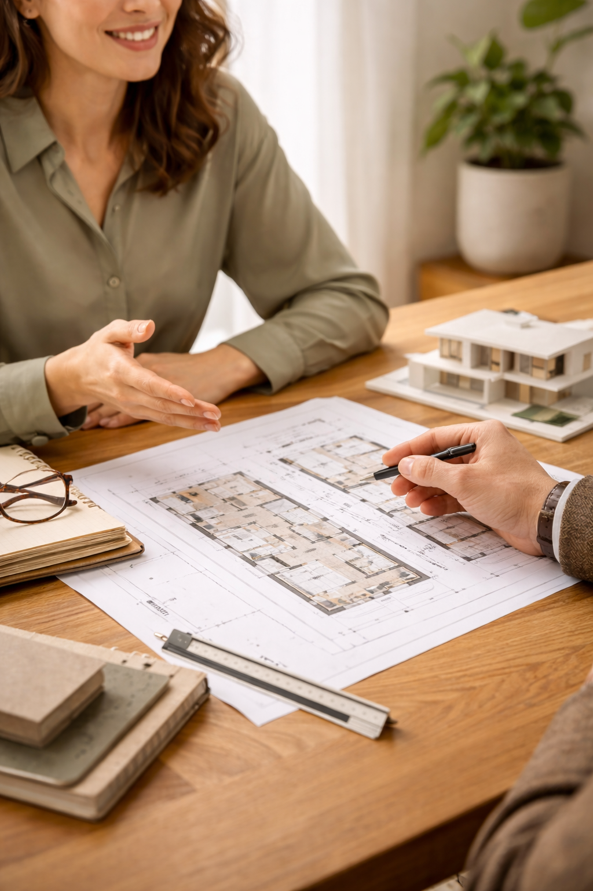
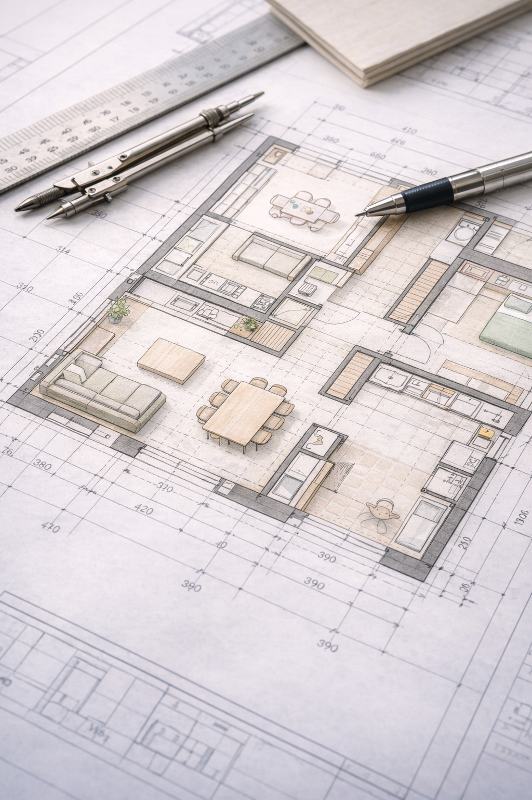
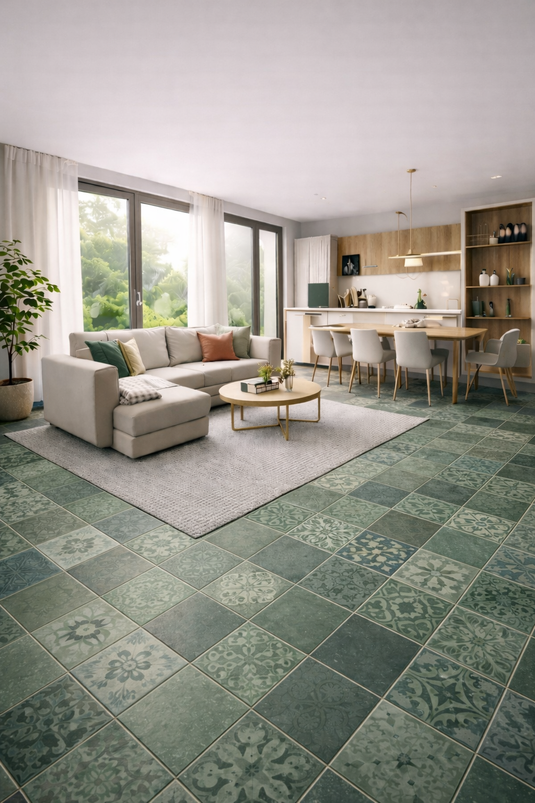
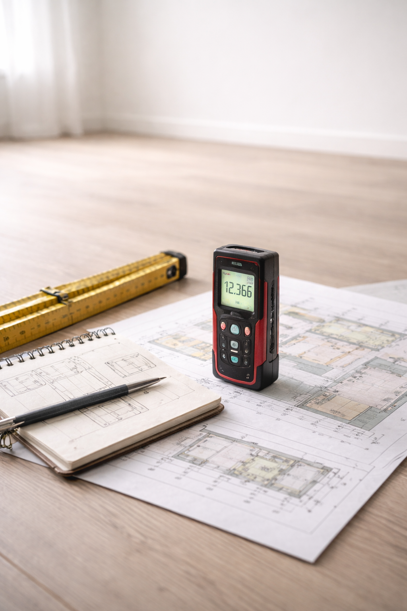
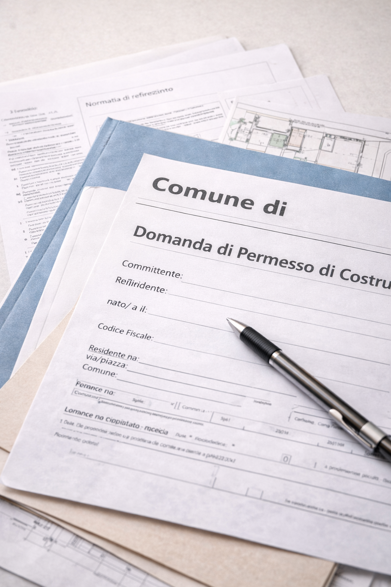
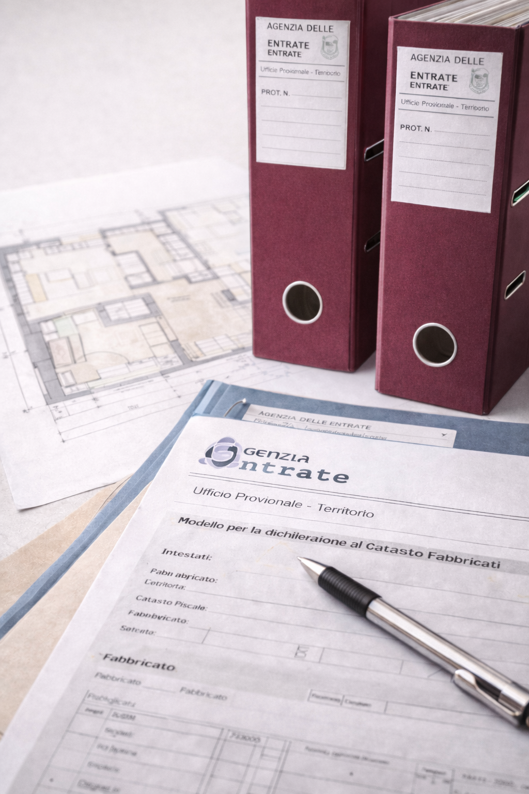
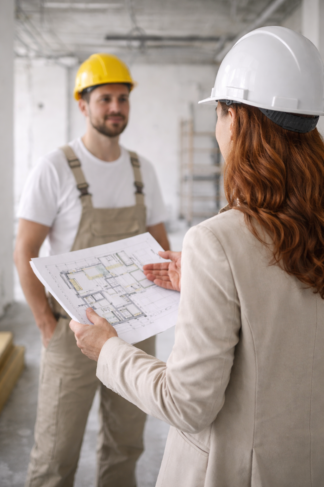
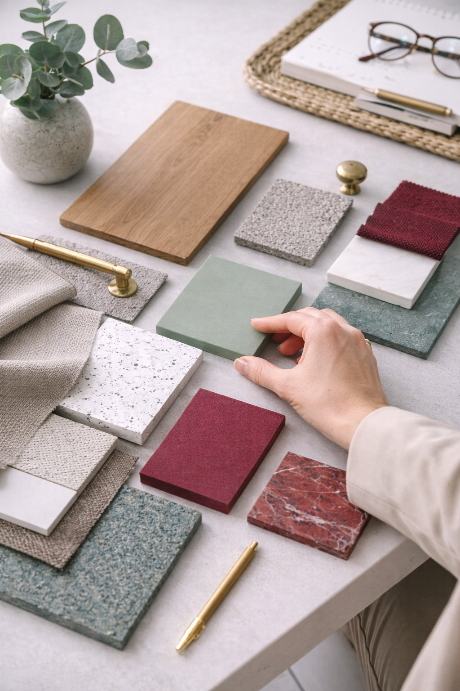

Se non sei sicuro di quale può essere il servizio più adatto a te,
scrivimi spiegando le tue esigenze e cercheremo insieme
la soluzione migliore per il tuo progetto.
Se ti ritrovi in una di queste situazioni o in qualsiasi altra situazione simile, sono qui per aiutarti.
La consulenza personalizzata sarà il momento in cui avremo il piacere di conoscerci: tu racconterai la tua storia, i tuoi desideri e le tue incertezze, ed io ti spiegherò di cosa mi occupo e come lavoro.
Sarà uno spazio dedicato principalmente a te; insieme analizzeremo le tue esigenze, la quotidianità che vivi e quella che sogni, il tuo budget, gli spazi di cui hai bisogno, valutando cosa desideri cambiare, ritrovare e quale atmosfera immagini per la tua casa.
Potremmo vederci di persona o fissare una call in modo da individuare insieme il percorso migliore da intraprendere per la casa che desideri.
Questa fase rappresenta il primo approccio alla tua casa. L'obiettivo è individuare le sue potenzialità, analizzandone la conformazione planimetrica e, soprattutto, mettendo al centro le tue esigenze.
Dopo aver definito il layout di progetto 2D, la modellazione tridimensionale ti permette di visualizzare gli spazi in modo più realistico e immersivo.
Attraverso viste 3D potrai comprendere meglio le proporzioni, la distribuzione degli ambienti e l'interazione tra luce, arredi e materiali. Questo passaggio ti aiuterà a prendere decisioni più consapevoli, immaginando con chiarezza come sarà la tua casa prima ancora di realizzarla.
Dall'idea alla realizzazione: questa fase prevede la gestione di ogni dettaglio progettuale, con la redazione di elaborati grafici per tutte le lavorazioni necessarie. L'elenco lavori sarà un prezioso strumento di supporto per ottenere preventivi accurati dalle imprese.
La fase di realizzazione è il momento in cui il progetto prende vita. Per garantire che tutto si svolga nel migliore dei modi, offro un supporto completo nella gestione del cantiere, dalla scelta dell'impresa alla supervisione dei lavori, assicurandomi che ogni dettaglio venga realizzato secondo il progetto concordato.
Ogni dettaglio contribuisce a creare l'atmosfera della tua casa. La scelta di materiali, finiture, arredi e illuminazione è fondamentale per dare coerenza al progetto e trasformare uno spazio in un ambiente che rispecchi il tuo stile e il tuo modo di vivere.